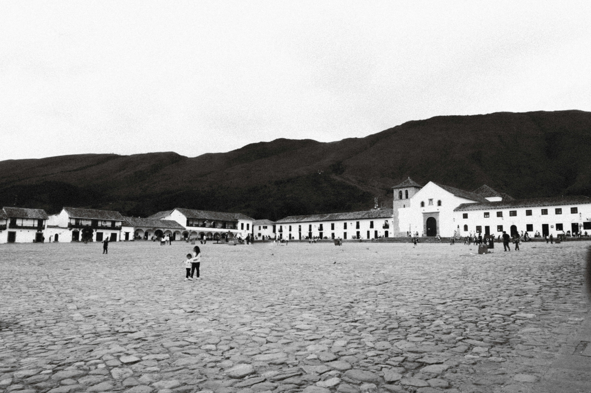

El Origen en Cundinamarca y Boyacá
La expresión "Ave María" tiene raíces profundas en la región Cundiboyacense (Cundinamarca y Boyacá), reconocida por su identidad campesina, en la que las invocaciones religiosas y expresiones naturales son parte del lenguaje diario.
Esta frase proviene de la oración católica y fue adaptada por el pueblo como una forma de expresar emociones en situaciones cotidianas.
